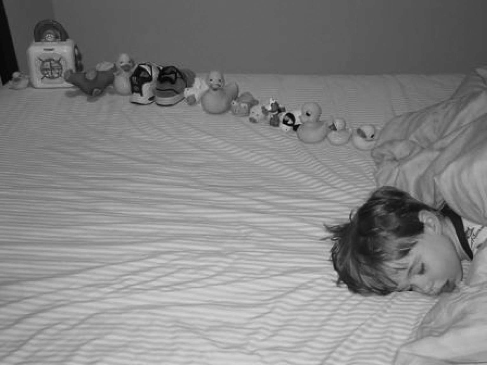

大卫、加里和爱德华的例子表明自闭症的核心标志差异有多么巨大，至少表面上看来如此。因此，医生必须有很多临床经验才能做出诊断。每个人的表现都不一样，依据的因素多到难以列出来，但这些因素至少包括年龄、家庭背景、总体能力、教育，以及孩子的自身脾气和性格。然而，它们还是有共通之处，这就是自闭症谱系的核心特征，即主要诊断标准。你能在一些网站上找到这些核心特征。在此我们用这些例子来揭示它们的含义。
自闭症谱系障碍的第一个核心特征跟交互性社交互动有关。仅仅孤独还不够，仅仅行为表现令人尴尬也不够，仅在社交场合很笨拙也不够。最严重的困难表现在与同伴交际方面。在小时候主要指与其他孩子而不是成人交际。成年人通常为了平息尴尬的社交场合而体谅更多。交互性交际失败的一个明显标志是与其他孩子一起时缺乏投入。
在大卫的病例中，社交失败可能第一眼会被认为是缺乏社交兴趣，或是对其他人的疏离。然而这种疏离其实是参与他人活动的无能，严重到他从来没有要求过别人教他读书，而是自学。加里无法解读他人的社交信号，也完全不知道怎样才能有女朋友，虽然他急切想有一个。爱德华可以跟欣赏他智力的人进行社交性互动，但他避免与同伴的社交互动。他努力想知道社交规则。
第二个相关的核心特征与交流有关。在内心深处，交流的能力取决于一个被承认正在发生的消息。一个人必须有交流的愿望，另一个人必须想要接收交流。交流不一定是说出来的话，也可以是手势或面部表情。如果没有伴随着发送和接收消息的信号，就不会有真正的交流。
大卫有着最严重的交流问题。他学语迟，语言使用极其有限，换句话说，他想要东西时他会说，但不会用来表达感情和思想。加里的困难更微妙些，他无法从人们的谈话方式来理解他们是否在开玩笑，当他试图跟别人讲话时常觉得被冷落。爱德华则非常流利，但他并不喜欢普通人的闲谈。他自从开始系统搜集关于交流的信息，自从读了关于礼节和体态语的书，读了关于阿斯伯格综合征的书后，参与双向交流的能力得到极大提高。
第三个核心特征和前两个不一样：它与重复性的活动和狭隘的兴趣相关。这些对很多孩子的家长来说都很陌生的特征，究竟“自闭”在何处？把积木或小汽车整齐排列成小图案，这样一两次会让人觉得很可爱，但如果日复一日重复同样行为而不去探索其他玩积木或小汽车的方法，就非常令人伤心了。这正是典型自闭症中兴趣爱好的重复和执著特质的极端特征。另一种看待重复性行为的方式是可以把它看作极端执拗。事实上这是在强烈抵制改变，厌恶创新。做一样的事，一模一样的事，看同样的视频，吃同样的食物，日复一日，这就是在自闭症儿童中发现的过分的模式。在自闭症成人身上不太引人注意，因为在他们身上行为范畴已通过学习和经历得到了拓宽。
图1a 关键特征1：在自己的世界中
图1b 关键特征2：不能够交流

图1c 关键特征3：刻板和重复性。如这幅动人的照片所示，整齐排列玩具在年幼的自闭症儿童做游戏时常可以观察到
大卫对弹跳球的热爱就是重复性行为的一个例子，他对于印刷品和阅读的兴趣堪称沉迷。加里没有这个特征，对他的诊断因此更加曲折。他对电脑游戏的兴趣与其他年轻人并无两样。爱德华依次出现过一系列强烈追求过的兴趣。某一刻他抛弃了对词典的兴趣，转而投向数学。
前面的图片显示，临床医生究竟注重哪些方面作为幼年时期自闭症的有意义的标志或者说症状。下一章中，我们将看到有些标志性行为会如何随年龄增长而改变。
众所周知，自闭症是一种发育障碍。发育意味着改变，对自闭症来说通常意味着改善，即一种逐渐增长的能力来应对世界上令人害怕的那些事，这个世界并非与人共享，因而不可预测。重复性和沉迷性特征通常会淡化，由此对生活的冲击不那么严重。成长中儿童和他们的家庭如果能接受良好的教育和支持，这些改善都有可能出现。